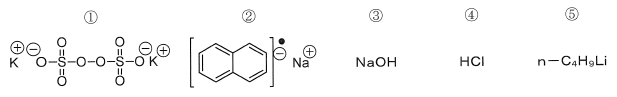

令和2年度 問18 高分子化学
以下の化合物のうち、ラジカル重合の開始剤として作用するのはどれか。

①
選択肢1
②
選択肢2
③
選択肢3
④
選択肢4
⑤
選択肢5
正答
①
過酸化物（-O-O-）は熱により結合が開裂して酸素ラジカルを発生します。このラジカルが開始剤として寄与します。
同様に代表的な重合開始剤として2,2′-アゾビスイソブチロニトリル（AIBN）のようなアゾ化合物が挙げられます。
2番はナトリウムナフタレニドと呼ばれ、アニオン重合開始剤として作用します。
3番は強塩基性であるためアニオン重合開始剤として作用します。
4番は強酸性であるためカチオン重合開始剤として作用します。
5番は高い求核性を持つためアニオン重合開始剤として作用します。